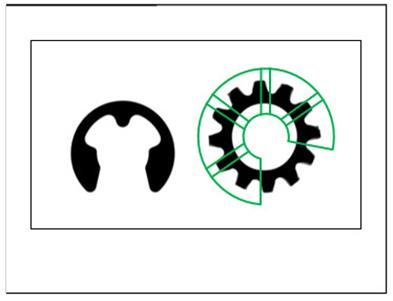

|
类型 |
形状测量 |
|
描述 |
生成扇环区域的圆对形状测量器，可测量圆和圆对，沿切向顺时针划分区域，子区域沿径向向圆心方向选择目标点或点对，使用ZV_MrCircle指令测量圆，测量圆时只选择一个点，使用ZV_MrCircle2指令测量圆对，测量圆对时选择一个点对。 默认使用绝对阈值模式
|
|
语法 |
ZV_MrCreateCircle2(mr,cx,cy,r,annR[,startAngle=0,extAngle=360,subWidth=10,thresh=20])
参数： mr：ZVOBJECT类型，生成的圆对测量器 cx：扇环的中心x坐标 cy：扇环的中心y坐标 r：扇环中线的半径，范围[1,16383] annR：扇环半宽，范围[1,r] startAngle：扇环区域起始角度，由图像坐标系确定，即顺时针为正，单位度数 extAngle：扇环区域角度范围，范围(0，360]，若大于360内部会限制为360 subWidth：子区域宽度，圆切向方向的子区域尺寸，单位像素，默认10，最小1 thresh：边缘梯度阈值，默认20，范围[1,255] |
|
适用控制器 |
支持ZV功能或者5系列以上的控制器 |
|
例子 |
 ZVOBJECT mr ZV_MrCreateCircle2(mr,120,120,60,40,0,120,10,30) '生成圆对测量器 |
|
相关指令 |